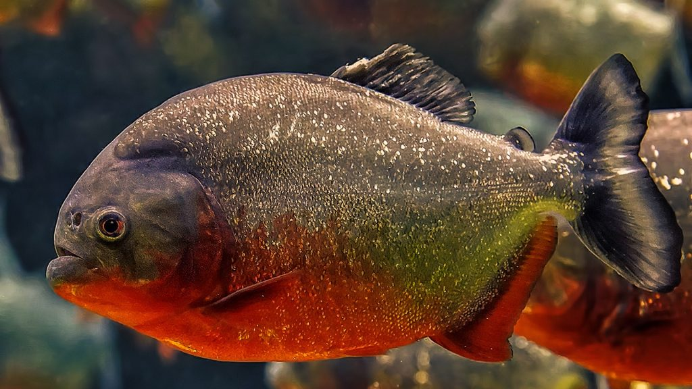
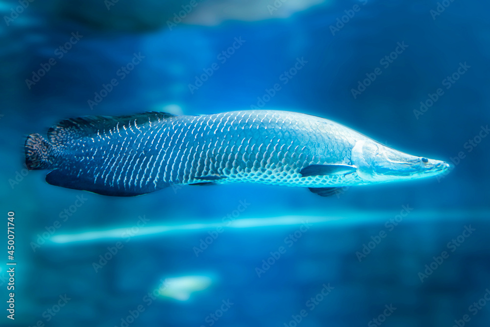
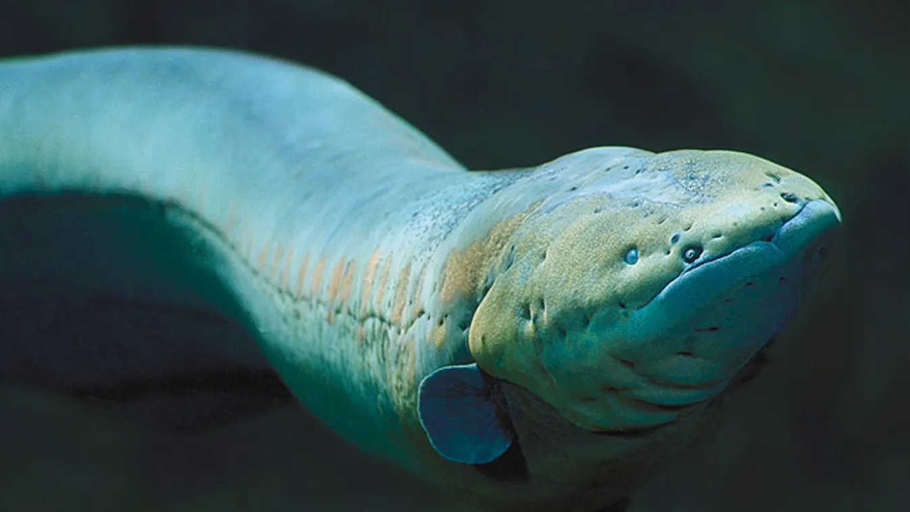
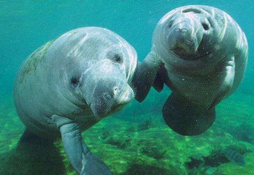
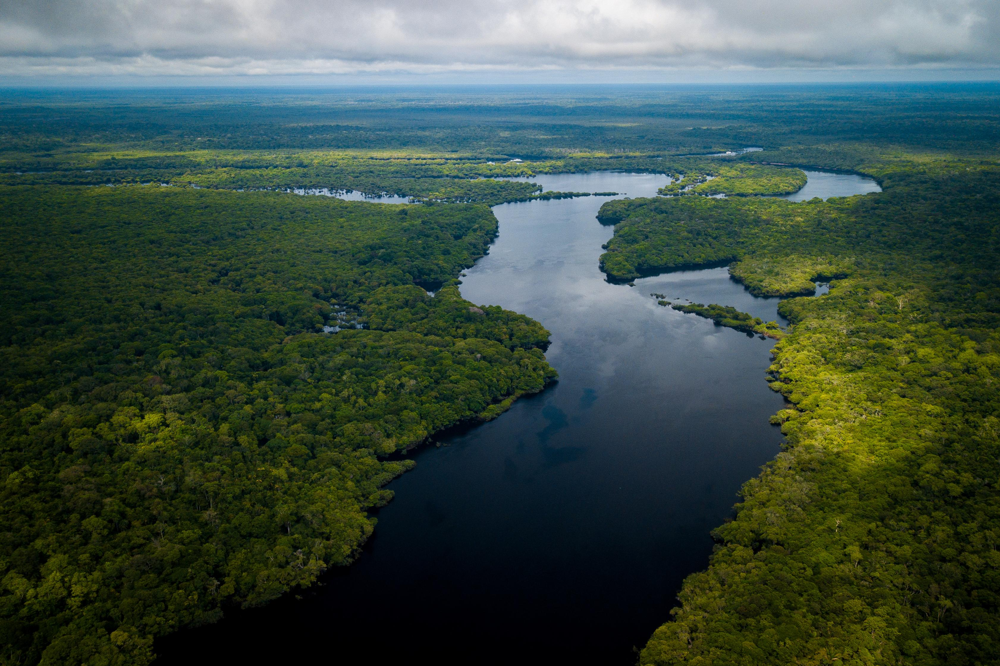
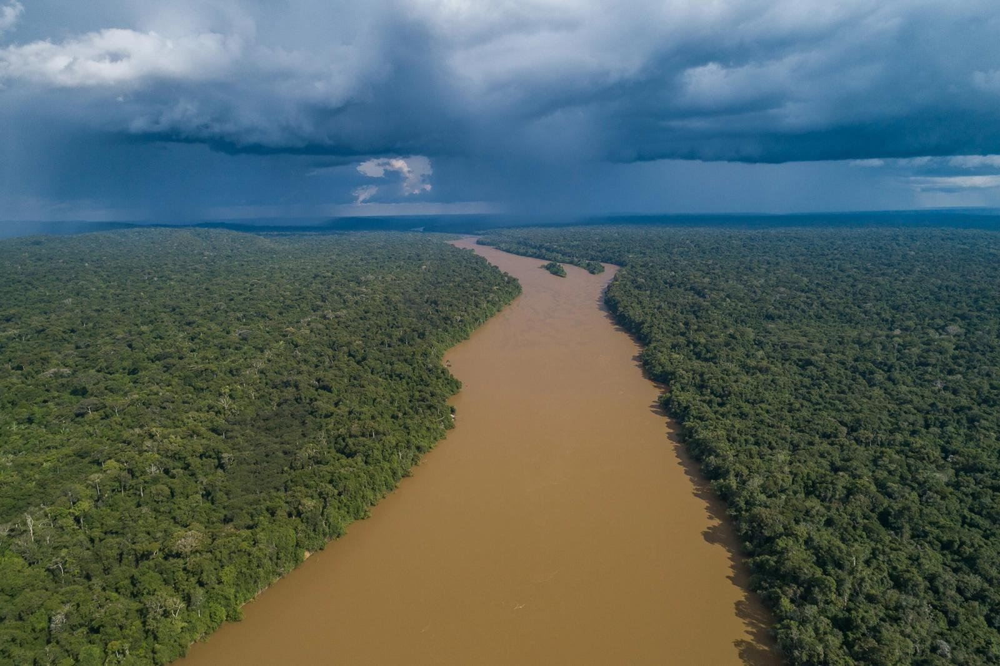
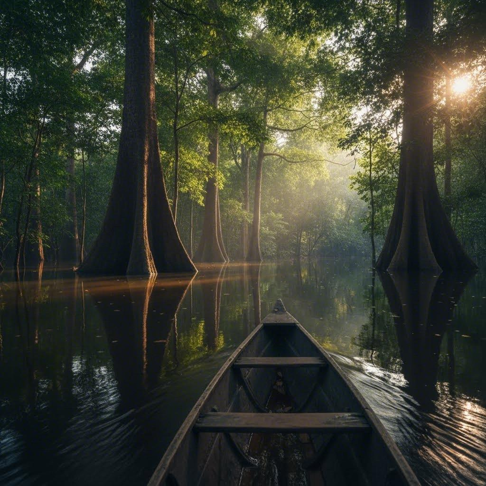

Az Amazonas
Az esőerdők, különösen az Amazonas-medence esőerdei, a Föld legváltozatosabb édesvízi élőhelyei közé tartoznak. Hatalmas folyók, kisebb patakok, mocsarak és időszakosan elárasztott erdők biztosítanak otthont rengeteg halfajnak, kétéltűnek, hüllőnek és vízi emlősnek. Az Amazonas folyórendszere a világ legváltozatosabb édesvízi ökoszisztémája, több mint 2500 ismert halfajjal. Néhány érdekes példa:

Piráják: Ezek a ragadozó halak csoportokban vadásznak, és fontos szerepet játszanak az ökoszisztémában.

Arapaima: Az egyik legnagyobb édesvízi hal, amely akár 3 méter hosszúra is megnőhet.

Elektromos angolna: Ez a hal erős elektromos töltést tud generálni védekezés és vadászat céljából.

Amazóniai manatik: Ezek a nagy testű, növényevő emlősök a folyók és árterületek lakói.

A szín legfontosabb oka a bomló növényi anyagokból származó oldott szerves vegyületek jelenléte. Amikor levelek, ágak és más növényi maradványok bomlanak le a trópusi erdő talajában, humuszanyagok és más szerves molekulák kerülnek a vízbe. Ezek a vegyületek elnyelik a fény jelentős részét, különösen a rövidebb hullámhosszú fényt, ezért a víz sötét, tea- vagy kávészerű színt kap. A folyó ettől még lehet viszonylag átlátszó, vagyis a sötét szín nem feltétlenül jelent nagy zavarosságot
Az esőerdők „fehér vizei” (angolul whitewater rivers) a trópusi folyók egyik különleges típusát jelentik. Leginkább az Amazonas-medencéből ismertek, és nem azért fehérek, mert tiszta, világos vagy habos vízről van szó: a színüket elsősorban a bennük lebegő, finom ásványi üledékek adják. A fehér vízek zavaros, agyagos-iszapos, gyakran sárgásbarna folyók, amelyek sok ásványi anyagot és lebegő hordalékot szállítanak.


Az elárasztott esőerdők a Föld legkülönlegesebb élőhelyei közé tartoznak. Képzelj el egy sűrű, zöld trópusi erdőt, ahol a fák törzseinek alsó része hónapokon át víz alatt áll, a halak az ágak között úsznak, a gyümölcsök a folyóba hullanak, és olyan állatok is megjelennek a fák között, amelyek szárazföldi erdőben élnek. Az Amazonas vidékén ezek az erdők nem pusztán árvizek által sújtott területek: az évszakos elárasztás az ökoszisztéma természetes működésének egyik alapja.